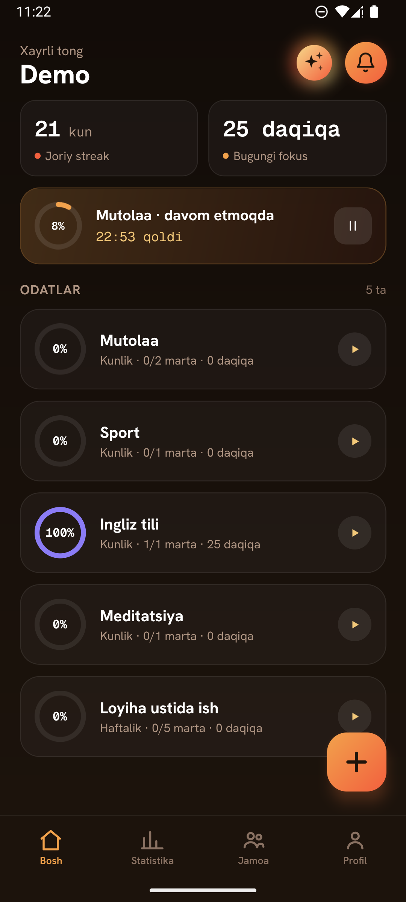
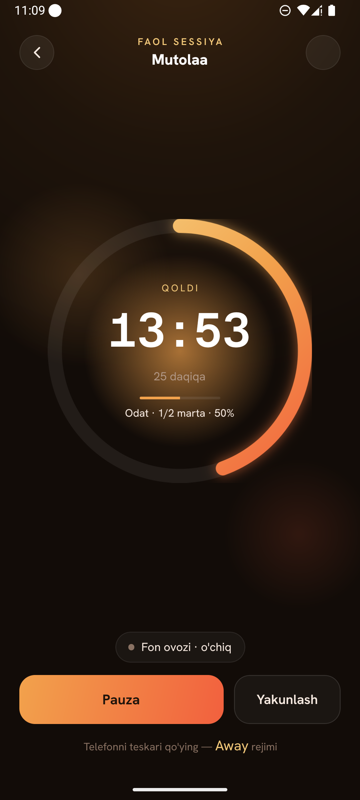
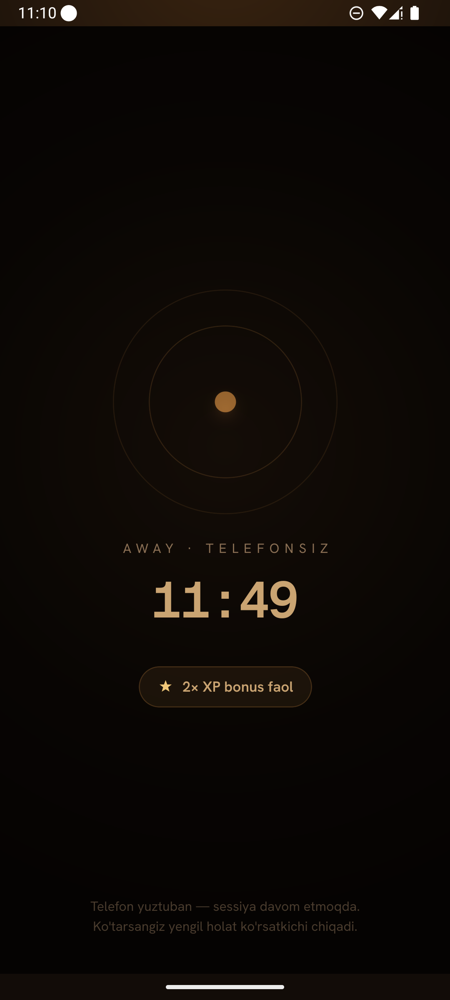
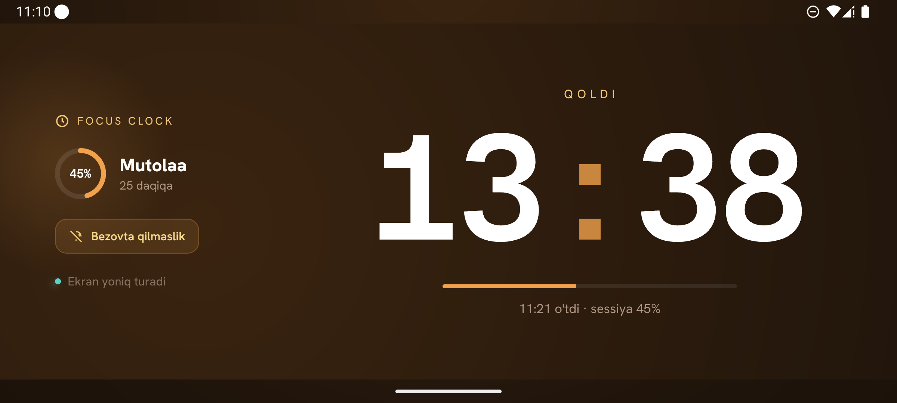
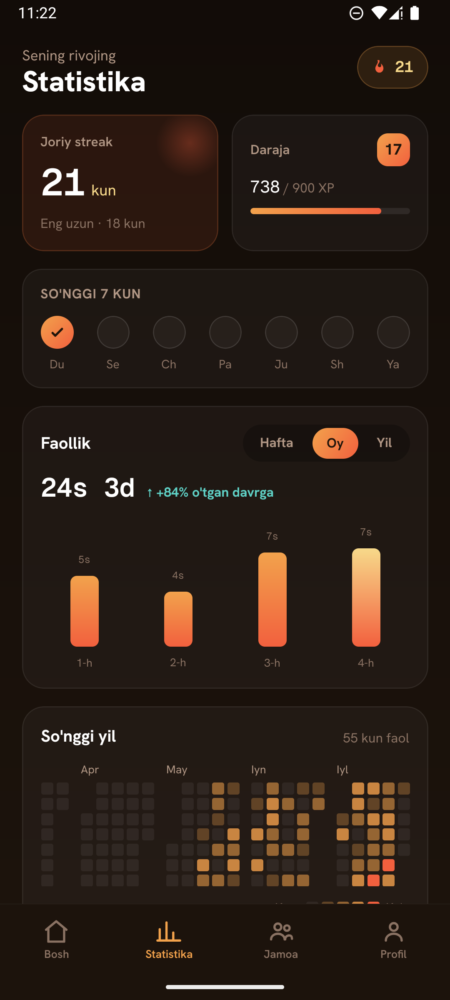
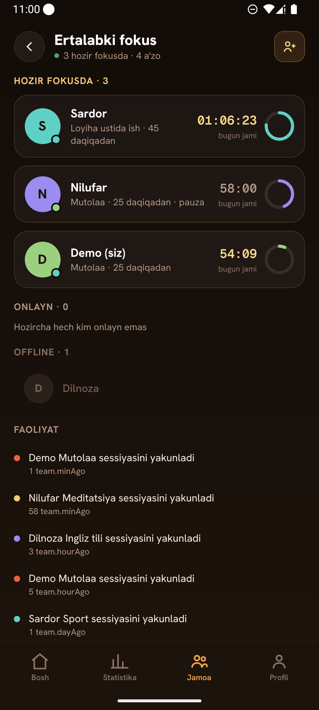
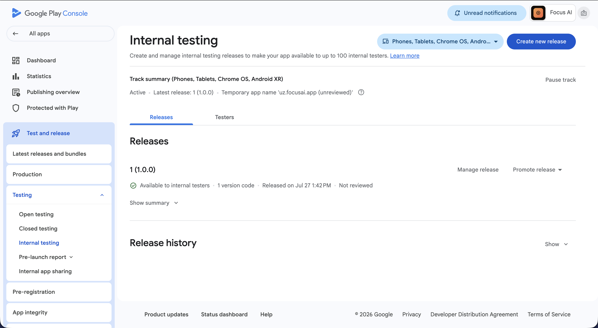
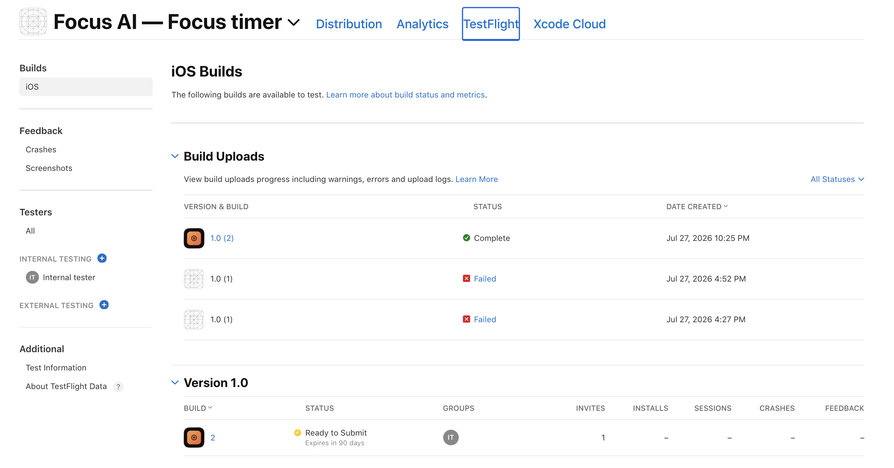

Ro‘yxatdan o‘tmasdan ochiladi
O‘rnatasiz va darhol ishlatasiz — hisob ham, internet ham shart emas. Ma‘lumotlar telefoningizda saqlanadi. Keyinroq hisob ochsangiz, ular boshqa qurilmalaringizga ham ko‘chadi.
Bu ilova “bajardim” degan belgini emas, siz sarflagan haqiqiy vaqtni sanaydi. Telefonni qo‘yib turgan daqiqalaringiz esa ikki barobar hisoblanadi.
Sessiya · maqsad 25:00
jonli maket Telefonni suring · F ag‘darish · C soat · R qaytadan
Asosiy g‘oya
Fokus ilovalarining hammasida bitta ziddiyat bor. Ular diqqatingizni jamlashga chaqiradi — lekin buning uchun ekranga qarab turishingizni talab qiladi. Diqqatingizni bo‘layotgan narsa esa aynan o‘sha telefon.
Biz shu ziddiyatni ilovaning asosiga aylantirdik. Telefonni qanday qo‘yganingiz — buyruqning o‘zi. Hech qanday tugma bosish shart emas.
Telefonni yuztuban qo‘ysangiz, ilova buni sezadi. Ekran qorayadi, taymer esa ishlashda davom etadi — va o‘sha daqiqalar ikki barobar hisoblanadi. Ya‘ni ilova sizni o‘zidan uzoqlashganingiz uchun mukofotlaydi.
Bu oddiy “ekran pastga qaradimi?” tekshiruvi emas. Telefon qo‘lda turganda yoki tasodifan qimirlaganda rejim yolg‘ondan yoqilib ketmasligi uchun aniqlash mantiqi alohida yozilgan va testlar bilan qoplangan.




O‘rnatasiz va darhol ishlatasiz — hisob ham, internet ham shart emas. Ma‘lumotlar telefoningizda saqlanadi. Keyinroq hisob ochsangiz, ular boshqa qurilmalaringizga ham ko‘chadi.
Odatni tanlaysiz, sessiya davomiyligini belgilaysiz — halqa real vaqtda to‘lib boradi. Animatsiya alohida oqimda chizilgani uchun ilova og‘ir ish bajarayotganda ham u sekinlashmaydi.
Ekran qorayadi, taymer to‘xtamaydi. Telefonsiz o‘tgan har bir daqiqa ikki barobar hisoblanadi. Bitta qoida, lekin u ilovaning butun mantiqini o‘zgartiradi: yaxshi natija — ilovada emas, ilovadan uzoqda o‘tkazilgan vaqt.
Ekran uzoqdan ko‘rinadigan katta soatga aylanadi va o‘chmay turadi. Shu payt “Bezovta qilmang” rejimi o‘zi yoqiladi — bildirishnomalar kelmaydi. Telefon stolda chalg‘ituvchi emas, oddiy soatga aylanadi.
Raqamlarda
Yana nimalar bor
Streak, daraja, ball va nishonlar — hammasi sessiyalaringizdan hisoblanadi. Qo‘lda belgilanadigan hech narsa yo‘q.


Har kuni qisqa tavsiya, har hafta esa tahlil beradi: qaysi kunlari yaxshi ishlaysiz, qayerda cho‘kib qolyapsiz. Ismingiz ham, raqamingiz ham yuborilmaydi — faqat quruq statistika.
Yomg‘ir, okean, o‘rmon va yana uchtasi. Maqsadga yetganingizda yumshoq jarang eshitiladi.
Sessiyani maqsadga yetmasdan to‘xtatsangiz, u o‘chmaydi — pauzada turadi va istagan vaqtingizda davom ettirasiz.
Qanday qurilgan
Ilova React Native’ning yangi arxitekturasida, Expo’siz qurilgan. Bu qiyinroq yo‘l, lekin sensor, tebranish va grafika ustidan to‘liq nazorat beradi.
Kod qatlamlarga bo‘lingan: app · screens · widgets · features · entities · shared. Har bir qatlam faqat o‘zidan pastdagiga murojaat qila oladi — buni linter tekshirib turadi.
Taymer soniyalarni sanamaydi — boshlanish vaqtini eslab qoladi. Shuning uchun ilovani yopsangiz ham, telefon uxlab qolsa ham, sessiya soatlab cho‘zilsa ham hisob aniq qoladi.
avtomatik test. Hisob-kitob mantig‘i interfeysdan ajratilgani uchun har biri alohida tekshiriladi.
Har bir o‘zgarish avval telefonga yoziladi. Bulutga esa keyin — internet paydo bo‘lganda.
AI kalitlari serverda qoladi, ilova ichiga tushmaydi. Bazada har bir foydalanuvchi faqat o‘z ma‘lumotini ko‘radi.
O‘zbek va rus tili, yorug‘ va qorong‘i mavzu — hammasi ilova ichidan almashtiriladi.
Holat
Ilova Google Play’ning ichki test kanalida tarqatilmoqda, iOS versiyasi esa TestFlight’ga yuklangan. Quyida — konsollardagi haqiqiy holat.

uz.focusai.app · reliz 1 (1.0.0) —
ichki testerlarga ochiq

uz.focusai.app —
ichki test guruhida
Sinab ko‘rish
Android’da havolani bosasiz va ilova darhol o‘rnatiladi. iOS versiyasi TestFlight’da turibdi, lekin Apple ichki test uchun ochiq havola bermaydi — kerak bo‘lsa taklif yuboramiz.
+998 90 123 45 67
FocusAI2026
Qolgan hamma narsa hisobsiz ishlaydi: odatlar, taymer, Focus Modes, statistika. “Mehmon sifatida davom etish” tugmasini bosing.